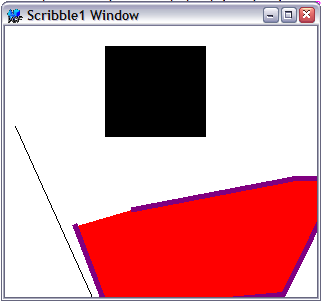
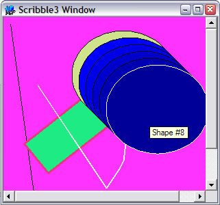

Title: MVC in the Visual Component Framework, Part II Author: Jim Crafton Email: jim.crafton@gmail.com Member ID: 12433 Language: C++ Platform: Windows Technology: Level: Intermediate Description: Part 2 of 4 that explores the Model-View-Controller Pattern in the Visual Component Framework Section Libraries SubSection General License: BSD
The previous article introduced the idea of the Model-View-Controller (MVC) pattern and how it's implemented in the Visual Component Framework. This article will take those ideas and start to build upon them with a new application that we'll add full blown MVC support and all sorts of other cool features. It will be similar in nature to the MFC Scribble example that Microsoft distributes.
First we'll create a new project for our scribble app, call it Scribble1 and we'll start by dealing with our model class. Our model will consist of a list of shapes, with each shape consisting of a array of points, a fill and stroke color, a 2D matrix, a stroke width, a boolean to indicate whether or not the shape is filled, and type to indicate the type of shape we're dealing with. A more "correct" OO design would probably replace the type with derived classes for the specific drawing shapes, but we'll ignore that for the sake of brevity. Here's the shape class:
class ScribbleShape : public VCF::Object {
public:
ScribbleShape():type(stLine),strokeWidth(1.0),filled(true) {}
enum Type {
stLine,
stRect,
stEllipse,
stPolygon,
stFreehand
};
Matrix2D mat;
std::vector<Point> points;
Type type;
double strokeWidth;
bool filled;
Color fill;
Color stroke;
};
To make it easier to implement, our model class will derive from
SimpleListModel. This is a basic implementation of the ListModel
class, and stores data as an array of VarianData objects. In
addition our model will add a default shape, from which shapes
will get their initial settings, and a background color.
class ScribbleModel : public VCF::SimpleListModel {
public:
ScribbleModel(){
//set this to true to
//delete all our objects
deleteVariantObjects_ = true;
backColor = *Color::getColor("white");
}
ScribbleShape* getShape( const unsigned int& index ) {
return (ScribbleShape*) (VCF::Object*) get(index);
}
void addLine( const Point& p1, const Point& p2 ) {
ScribbleShape* s = new ScribbleShape();
*s = defaultShape;
s->points.push_back( p1 );
s->points.push_back( p2 );
s->type = ScribbleShape::stLine;
add( s );
}
void addRect( const Point& p1, const Point& p2 ) {
ScribbleShape* s = new ScribbleShape();
*s = defaultShape;
s->points.push_back( p1 );
s->points.push_back( p2 );
s->type = ScribbleShape::stRect;
add( s );
}
void addEllipse( const Point& p1, const Point& p2 ) {
ScribbleShape* s = new ScribbleShape();
*s = defaultShape;
s->points.push_back( p1 );
s->points.push_back( p2 );
s->type = ScribbleShape::stEllipse;
add( s );
}
//rest omitted
void setDefaultWidth( const double& val ) {
defaultShape.strokeWidth = val;
}
void setDefaultFilled( const bool& val ) {
defaultShape.filled = val;
}
//rest omitted
void setBackColor( Color* val ) {
backColor = *val;
VCF::ModelEvent e( this, VCF::Model::MODEL_CHANGED );
changed( &e );
}
Color* getBackColor() {
return &backColor;
}
Rect getMaxBounds();
protected:
ScribbleShape defaultShape;
Color backColor;
};
This gives us a basic model for storing shapes. Since each ScribbleShape derives from Object, we can store it in the array of VariantData items that the model maintains for us. When we add shapes to the model, the ModelChanged delegate is triggered, and the normal update mechanism for any associated views takes place. With that in mind let's move on to the UI.
Our first UI for the scribble app will be very simple. We will use the main window itself as our view, and handle the painting there as well. Our painting logic simply iterates through all the shape objects in the model, and then draws each shape.
virtual void paint( GraphicsContext* ctx ) {
Window::paint( ctx );
ScribbleModel* scribble = (ScribbleModel*) getViewModel();
Rect r = getClientBounds();
ctx->rectangle( r );
ctx->setColor( scribble->getBackColor() );
ctx->fillPath();
size_t count = scribble->getCount();
for (size_t i=0;i<count;i++ ) {
const ScribbleShape* shape = scribble->getShape(i);
int gcs = ctx->saveState();
ctx->setCurrentTransform( shape->mat );
switch ( shape->type ) {
case ScribbleShape::stLine : {
ctx->setColor( &shape->stroke );
ctx->moveTo( shape->points[0] );
ctx->lineTo( shape->points[1] );
ctx->strokePath();
}
break;
case ScribbleShape::stRect : {
r.setRect( shape->points[0].x_, shape->points[0].y_,
shape->points[1].x_, shape->points[1].y_ );
ctx->rectangle( r );
}
break;
case ScribbleShape::stEllipse : {
r.setRect( shape->points[0].x_, shape->points[0].y_,
shape->points[1].x_, shape->points[1].y_ );
ctx->ellipse( r.getTopLeft(), r.getBottomRight() );
}
break;
case ScribbleShape::stPolygon : {
ctx->polyline( shape->points );
ctx->closePath( shape->points.back() );
}
break;
case ScribbleShape::stFreehand : {
ctx->polyline( shape->points );
}
break;
}
if ( shape->type != ScribbleShape::stLine ) {
if ( shape->filled ) {
ctx->setColor( &shape->fill );
ctx->fillPath();
}
ctx->setStrokeWidth( shape->strokeWidth );
ctx->setColor( &shape->stroke );
ctx->strokePath();
}
ctx->restoreState( gcs );
}
}
The code is reasonably simple, note that the Window, which derives from Control and is therefore also a View, gets it's model using the getViewModel() method. This makes the code pretty easy to migrate to anything else that has a model later on.
Like the previous article, we'll use the VFF format here to define the basic window UI, but it will be very simple:
object Scribble1Window : VCF::Window top = 200 left = 200 height = 300 width = 320 caption = 'Scribble1 Window' endJust enough to position the window set it's title. The rest of work will be done in the window's constructor:
Scribble1Window() {
ScribbleModel* scribble = new ScribbleModel();
addComponent( scribble );
scribble->addView( this );
scribble->addLine( Point(10, 100), Point(100, 300) );
scribble->addRect( Point(100, 20), Point(200, 110) );
ScribbleShape* shape = new ScribbleShape();
shape->type = ScribbleShape::stPolygon;
shape->points.push_back( Point(40, 30) );
shape->points.push_back( Point(34, 120) );
shape->points.push_back( Point(200, 180) );
shape->points.push_back( Point(300, 100) );
shape->points.push_back( Point(260, 80) );
shape->points.push_back( Point(100, 40) );
shape->strokeWidth = 5;
shape->filled = true;
shape->fill = *Color::getColor("red");
shape->stroke = *Color::getColor("purple");
shape->mat = Matrix2D::translation( -40, -30 ) *
Matrix2D::rotation(-25) *
Matrix2D::translation( 70, 200 );
scribble->add( shape );
}
The code creates a new ScribbleModel instance and adds the window (as a view) to the model. We create three shapes, the first two calls are done using the specific ScribbleModel methods to make a shape, and the third call creates a ScribbleShape from scratch and adds it using the ListModel::add() method. Since the ListModel::add() method takes a VariantData object, we can pass in our ScribbleShape instance pointer. Once we build all this and run it, we end up with something like this:

At this point we now have a functioning, if simple, model that can maintain shapes, and a view that can draw them. Next we'll look at making the model a little more sophisticated so that we can manipulate it in the VFF resource.
Our next step will allow us to have something like this in the program's VFF resource:
object scribble : ScribbleModel backColor.red = 1.0 backColor.green = 0.20 shapes[0].fill.red = 0.12 shapes[0].fill.blue = 0.52 shapes[0].fill.green = 0.92 shapes[0].data = 'line M 10 10 L 50 300' endAs you can see, we can create a scribble model, and add shapes as we see fit, and modify their properties. This makes it easy to test out different shapes, colors, and so on.
To do this, the first thing we need to do is add the VCF's RTTI support for our two classes, the ScribbleModel and ScribbleShape. We do this with the _class_rtti_ macro, like so:
_class_rtti_(ScribbleShape, "VCF::Object", "ScribbleShape") _class_rtti_end_ _class_rtti_(ScribbleModel, "VCF::SimpleListModel", "ScribbleModel") _class_rtti_end_This allows us to create class instances of dynamically. Next we need to add property support to the ScribbleShape class so that we can access the various attributes of the class. To do so we use the VCF's _property_ macros, like this:
_class_rtti_(ScribbleShape, "VCF::Object", "ScribbleShape") _property_object_( Color, "fill", getFill, setFill, "" ); _property_object_( Color, "stroke", getStroke, setStroke, "" ); _property_( double, "strokeWidth", getStrokeWidth, setStrokeWidth, "" ); _property_( bool, "filled", getFilled, setFilled, "" ); _property_( String, "data", getData, setData, "" ); _property_( double, "rotation", getRotation, setRotation, "" ); _property_( double, "transX", getTranslateX, setTranslateX, "" ); _property_( double, "transY", getTranslateY, setTranslateY, "" ); _property_( double, "scaleX", getScaleX, setScaleX, "" ); _property_( double, "scaleY", getScaleY, setScaleY, "" ); _property_( double, "shearX", getShearX, setShearX, "" ); _property_( double, "shearY", getShearY, setShearY, "" ); _class_rtti_end_The macro takes the property type, property name, getter and setter methods, and a description string (which we'll leave blank). The _property_object_ is similar to the _property_ macro, only it's specifically used for attributes that derived from VCF's Object class.
The main thing we've added here is the ability to define the points of a shape in a string, similar to how points are defined in SVG, for example
line M 10 10 L 50 300This defines a line shape with 2 point, the first a move-to, and the second a line-to point. You could define a polygon:
poly M 50 100 L 150 250 L 170 220 L 175 210 L 180 165Obviously not very sophisticated, but it gives us an easy, if crude, way to define shapes.
We can do the same thing for the ScribbleModel:
_class_rtti_(ScribbleModel, "VCF::SimpleListModel", "ScribbleModel") _property_object_( Color, "backColor", getBackColor, setBackColor, "" ); _property_object_( Color, "defaultFill", getDefaultFillColor, setDefaultFillColor, "" ); _property_object_( Color, "defaultStroke", getDefaultStrokeColor, setDefaultStrokeColor, "" ); _property_( double, "defaultStrokeWidth", getDefaultWidth, setDefaultWidth, "" ); _property_( bool, "defaultFilled", getDefaultFilled, setDefaultFilled, "" ); _class_rtti_end_Now the only thing missing is adding specific support for accessing the individual ScribbleShape elements. That's what we use the _property_array_ macro for. This macro takes an element type, and methods to get, set, insert, remove, and get the count of elements in the collection/array. We already have all the get, set, insert, remove, and count methods as a part of the ListModel class. So we can add it as follows:
_class_rtti_(ScribbleModel, "VCF::SimpleListModel", "ScribbleModel") //rest omitted _property_array_( VariantData, "shapes", get,set,insert,remove,getCount, "" ) _class_rtti_end_This now allows us to access elements in the list model by index, using the "[]" notation. So we can write code in the VFF like:
shapes[1].fill.red = 0.12This will get a shape a index 1, and assign it's fill property (which is a Color object) a red component with a value of 0.12. The only problem here is that we need to make sure that our shape exists when the get() method is called. So lets modify our ScribbleModel get method:
virtual VariantData get( const uint32& index ) {
size_t missing = 0;
if ( (index+1) > data_.size() ) {
missing = (index+1) - data_.size();
}
//add empty shapes if we need to
if ( missing > 0 ) {
size_t i=data_.size();
data_.resize( missing + data_.size() );
while ( i < data_.size() ) {
data_[i] = new ScribbleShape();
i++;
}
}
return data_[index];
}
This checks to make sure that we always have enough shapes to satisfy the
request for an element at some index. Logic like this already exists in
the SimpleListModel's set() method, but since we are not "setting" an
element, this doesn't get called. Instead, because we are accessing the
element's properties, we first "get" the element and then modify it.
Because of this we need to make the above modifications.
At this point we can modify the model in the VFF resource. This simplifies our window constructor, and we can clear out the previous code that was there. Instead we now define the model and associate a view with it in the VFF resource, like so:
object Scribble2Window : VCF::Window
//rest omitted
caption = 'Scribble2 Window'
model = @scribble
object scribble : ScribbleModel
backColor.red = 1.0
backColor.green = 0.20
shapes[0].fill.red = 0.12
shapes[0].fill.blue = 0.52
shapes[0].fill.green = 0.92
shapes[0].data = 'line M 10 10 L 50 300'
//rest omitted
end
end
Note the "model = @scribble". Even though this comes before the scribble
instance is defined we can still reference it here, because the VFF
loading mechanism will actually link the two later on. Like the previous
article, by specifying a model here, the view is automatically added
to the model. The scribble model is defined and we can add shapes to
it and set their properties. What we end up with is something like this:

OK, OK, not the most artistic drawing, but bear with me, we'll do something a bit more interesting later on...
We're going to add a couple more features here before we finish this part of the series. We'll create a specific Controller and View class for the rendering of the ScribbleModel. We'll look at adding a little bit of interactivity as well as responding to model changes.
First we'll create a View class. As previously discussed, a View tends to be pretty simple, at least in terms of it's interface. Our class will re-implement one method, paintView(). The code that we previously put in the window's paint() method, will be moved here.
class ScribbleView : public AbstractView {
public:
ScribbleView(){}
virtual void paintView( GraphicsContext* ctx ) {
ScribbleModel* scribble = (ScribbleModel*) getViewModel();
Control* control = getViewControl();
Rect r = control->getClientBounds();
ctx->rectangle( r );
ctx->setColor( scribble->getBackColor() );
ctx->fillPath();
Scrollable* scrollable = control->getScrollable();
if ( scrollable ) {
Rect viewBounds = ctx->getViewableBounds();
Point origin = ctx->getOrigin();
control->adjustViewableBoundsAndOriginForScrollable( ctx, viewBounds, origin );
ctx->setOrigin( origin );
ctx->setViewableBounds( viewBounds );
}
//rest omitted
}
};
As we mentioned in the previous article, each view has a control associated with
it. We use this control to determine our initial bounding rect. Next we
add support for scroll bars. A Scrollable represents something that can
be scrolled vertically and/or horizontally. A control supports scrolling if
it's assigned a scrollable instance (by default it has none), and therefore
returns a non-null value when the Control::getScrollable() method is called.
If the control has a scrolling support, we adjust the graphics context's origin
and viewable bounds for the scrollable object. This takes into consideration
where the scrollbars may be and the "virtual" height and/or width of the view.
After that's taken care of, the rest of the painting code is largely the same
as the previous code. One other feature we added was the concept of an "active"
shape. If the model has an active shape, then we'll draw that slightly differently
so it stands out a bit.
With our new view class, our window code has shrunken considerably!
class Scribble3Window : public Window {
public:
Scribble3Window() {
}
virtual ~Scribble3Window(){};
};
Next up: let's formally add an honest-to-goodness controller class. We'll call it, oddly enough, ScribbleController, and it will have a couple of responsibilities. First it will listen for mouse move events from it's target control that the controller is associated with. If the controller determines that the mouse is over a shape, then it will set the model's active shape. Next it will get notified when the model changes. When this happens the controller will get the maximum bounds from the model and then set the control's virtual height and width of it's scrollable instance. This addjusts the presence (or absence) of scrollbars for the control.
The basics of this look like:
class ScribbleController : public Component {
public:
ScribbleController(): model(NULL), modelControl(NULL),activeShape(NULL) {
addCallback( new ClassProcedure1<Event*,ScribbleController>(this, &ScribbleController::onModelChanged), "ScribbleController::onModelChanged" );
addCallback( new ClassProcedure1<MouseEvent*,ScribbleController>(this, &ScribbleController::onMouseMove), "ScribbleController::onMouseMove" );
addCallback( new ClassProcedure1<MouseEvent*,ScribbleController>(this, &ScribbleController::onMouseDown), "ScribbleController::onMouseDown" );
addCallback( new ClassProcedure1<MouseEvent*,ScribbleController>(this, &ScribbleController::onMouseUp), "ScribbleController::onMouseUp" );
}
void setControl( Control* val );
void setModel( ScribbleModel* scribbleModel );
void onModelChanged( Event* e );
void onMouseMove( MouseEvent* e );
void onMouseDown( MouseEvent* e );
void onMouseUp( MouseEvent* e );
const ScribbleShape* hitTest( const Point& point );
Control* modelControl;
ScribbleModel* model;
const ScribbleShape* activeShape;
};